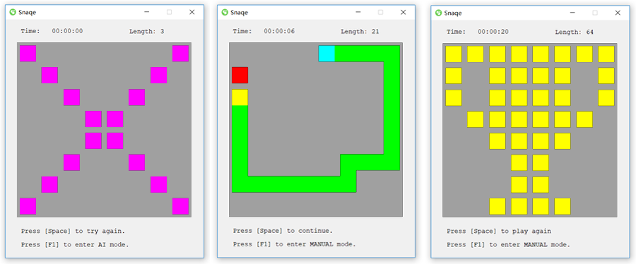
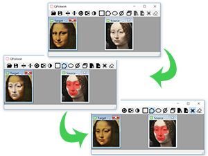
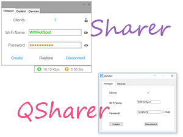
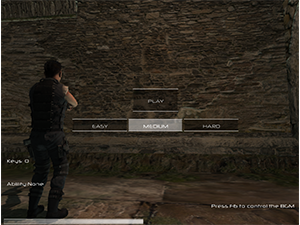
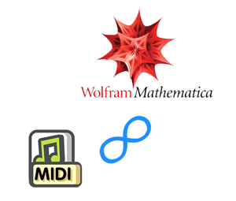

我对算法实现与计算机数值模拟很感兴趣，对利用数理知识解决实际问题抱有极大热情，有较好的数学基础及解决问题的能力。热衷于软件开发，并在GitHub上有自己的作品集。同时我也是个爱好广泛的人，兴趣涉猎小提琴、钢琴、电子音乐合成、素描、魔方、游戏开发和昆虫标本制作等。
关于我
近期作品
Snaqe - 贪吃蛇AI
Qt上开发的集成了基于A*算法AI的经典贪吃蛇游戏——Snaqe

最近更新
贪吃蛇已成为一类电子游戏概念。我正在做的事情是让计算机去代替人来玩贪吃蛇游戏并吃满全屏。不过在此之前，我先要开发一款游戏本体，再把AI集成进去。
蛇自动搜寻食物所用的算法是基于A*算法的，此算法在蛇身不是很长的时候比较好用。然而，随着蛇身的不断增长，它的缺陷便逐渐显露出来了。那便是蛇在拐弯爬行会留下很多空洞，使其不得不浪费大量时间去绕路填补。为避免此现象，我修改了AI的决策：让蛇在长度小于某个阈值时调用A*算法，反之则调用搜寻Hamilton通路算法。虽然这次效果有所改善，但仍然会出现蛇陷入死循环的情形，因此我还在调试它。

QPoisson - 泊松融合图像编辑器
QPoisson不单单是一款用于实现如镜像、旋转、反色、灰度等常规图像变换的图片编辑器，还是一个实现泊松融合算法的载体。它可以将一幅图上的片段无缝拼接到另一幅较大的图片中。

FluidS - 流体模拟器
其用于模拟进程的核心算法参考了Robert Bridson编写的Fluid Simulation for Computer Graphics中的内容：使用纳维-斯托克斯方程作为物理模型，实时计算得到的数值解便是标量场及速度场的分布情况，并显示在OpenGL控件中。用户有64x64和128x128两种分辨率以及7种颜色选项可供选择。

Sharer 与 QSharer - WiFi热点共享软件
Sharer在VB.NET框架下设计的界面，是一款可将装有可共享无线网卡的Windows笔记本变身成WiFi发射器的软件。而QSharer相当于用C++开发的被移植到Qt框架下的Sharer。Sharer中含有一个网速监控器，可实时计算上传及下载速率；而QSharer不含监控器，但却集成了OUI列表：当有新设备连入WiFi时，可根据其MAC地址解析出设备厂商。标题可链接到Sharer的GitHub页面，而下方的链接可跳转到QSharer页面。

地穴奇兵 - 3D射击游戏
这是一款在Unity上开发的单机版3D射击游戏：我们的主人公被困在神秘的地穴之中。这是一个混杂魔兽与机器、远古与未来的世界观。我们的主人公单枪匹马面对形形色色的敌人，他将何去何从？角色与场景的半成品模型下载于游戏蛮牛，动作脚本用C#编写。

数字音乐宏包 - 作曲代码简化工具
在Mathematica上合成电子音乐时，由于平台的声音模块中编曲的输入结构较为复杂，作曲者不得不键入大量代码才能将乐谱转成MIDI音频。传统的音乐合成方式包含大量重复的代码结构和特殊音效上的功能缺陷，因此为解决这些问题，我开发了这款宏包。
项目经历
悉尼大学ELEC5619课程项目 (2019.8 至 2019.11)
成果：作为项目组长在一个学期内带领团队完成项目Proposal、代码、用户手册编写、Presentation以及Demo视频制作，团队的项目代码最终获得HD高分，提升了编程能力、文档编写能力以及团队合作能力。
介绍：项目名称为“个性化实时简历在线生成器”，是一款致力于为悉尼大学学生模拟公司招聘与求职的服务平台；项目有三类用户：管理员、企业级用户和求职者用户，其中求职者可以为自身设计动态的网页简历，企业级用户可以搜索、浏览以及标记求职者的简历、管理员可以审核与封禁用户；项目后台基于Java-SpringMVC框架编写。
CTCS2-200H 车载设备技术改进项目 (2018.7 至 2019.3)
成果：半年内提交11份下位机软件变更及发布、1份下位机软件配置变更、2份工具软件变更、2份新开发工具软件发布以及1份重要文档变更；熟悉了大公司的管理流程，提升了编程能力、文档编写能力以及团队合作能力。
介绍：嵌入式软件、支持类工具软件开发以及CTCS2-200H系列车型自动安全保护系统的维护；项目共2人承担：系统工程师1人、软件工程师1人。我作为软件工程师，主要职责有：变更规格文档编写、代码及代码对比表编写、自测试及自测试报告编写、参数说明书更新、软件版本配置表更新以及用户操作手册更新等。
ETCS 车载设备开发项目 (2018.4 至 2018.7)
成果：在不到3个月之内理解了上百页的英文算法需求规格并且在算法原理汇报会议上清晰地做了讲解工作，为后续E2欧洲铁路车载系统软件的开发奠定量坚实的理论基础。
介绍：欧洲铁路车载系统设计需求对标工作；项目共2人承担：系统工程师1人、算法工程师1人。我作为算法工程师，主要负责E2欧洲铁路车载系统软件标准基线中动态模式曲线算法的梳理工作。
工作经历
嵌入式软件工程师 - 北京和利时系统工程有限公司 (2018.4 至 2019.4)
负责CTCS2列控车载设备系统功能模块的设计及实现；负责CTCS2列控车载设备系统软件的单元测试、静态分析、集成测试；负责CTCS2列控车载设备系统软件的问题分析及维护；负责CTCS2列控车载设备系统工具软件的开发及维护。
Web开发工程师 - 辽宁东野实业集团 (2016.8 至 2018.4)
负责公司网页前端设计、后端搭建与维护，无纸化办公建设及管理。